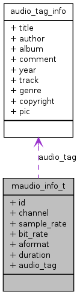

Main Page
Classes
Files
Class List
Class Index
Public Attributes
maudio_info_t Struct Reference
Collaboration diagram for maudio_info_t:

[
legend
]
List of all members.
Public Attributes
int
id
int
channel
int
sample_rate
int
bit_rate
aformat_t
aformat
int
duration
audio_tag_info
*
audio_tag
Detailed Description
Definition at line
107
of file
player_type.h
.
The documentation for this struct was generated from the following file:
player_type.h
All
Classes
Files
Functions
Generated on Thu Sep 1 2011 15:32:52 for AmplayerAPI by
1.7.1
 1.7.1
1.7.1